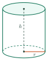
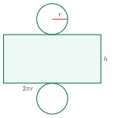
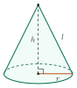
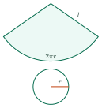
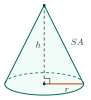

Cylinders and ConesHình trụ và hình nón
Grade 9 · Topic: Solid Shapes in Everyday LifeLớp 9 · Chủ đề: Một số hình khối trong thực tiễn
1Lesson IntroductionGiới thiệu bài học
Learning goalsMục tiêu bài học
By the end of this lesson you can:
Sau bài học này, em có thể:
recognize cylinders and cones and their elements (base, radius, height, generatrix, vertex);
nhận biết được hình trụ, hình nón và các yếu tố: đáy, bán kính đáy, chiều cao, đường sinh, đỉnh;
use \(S_{xq}=2\pi rh\), \(V=\pi r^2h\) (cylinder) and \(S_{xq}=\pi rl\), \(V=\dfrac13\pi r^2h\) (cone);
dùng được các công thức \(S_{xq}=2\pi rh\), \(V=\pi r^2h\) (hình trụ) và \(S_{xq}=\pi rl\), \(V=\dfrac13\pi r^2h\) (hình nón);
find the slant height with Pythagoras’ theorem;
tính được đường sinh bằng định lí Pythagore;
solve real problems (water tanks, conical hats, party hats from a sector).
giải được bài toán thực tế (bồn nước, nón lá, mũ sinh nhật cuộn từ hình quạt).
2Mathematical VocabularyTừ vựng Toán học
cylinder – obtained by rotating a rectangle one full turn about one side.
Hình trụ – tạo thành khi quay một hình chữ nhật một vòng quanh một cạnh cố định.
cone – obtained by rotating a right triangle one full turn about one leg.
Hình nón – tạo thành khi quay một tam giác vuông một vòng quanh một cạnh góc vuông cố định.
base, radius \(r\), height \(h\) – the circular base(s), its radius, the distance between the bases (from the vertex to the base).
Đáy, bán kính đáy \(r\), chiều cao \(h\) – (các) hình tròn đáy, bán kính của nó, khoảng cách giữa hai đáy (từ đỉnh đến đáy).
generatrix / slant height \(l\) – a segment on the lateral surface joining the two bases (the vertex and the base circle).
Đường sinh \(l\) – đoạn thẳng trên mặt xung quanh nối hai đáy (nối đỉnh với đường tròn đáy).
lateral area / volume / net – area of the curved surface; space inside; the flat shape after cutting it open.
Diện tích xung quanh / thể tích / hình khai triển – diện tích mặt cong; phần không gian bên trong; hình phẳng sau khi cắt và trải mặt xung quanh.
3Useful English PhrasesCụm từ tiếng Anh thường gặp
The cylinder has base radius 3 cm and height 10 cm.
Hình trụ có bán kính đáy 3 cm và chiều cao 10 cm.
The lateral area of the cylinder is \(2\pi rh\).
Diện tích xung quanh của hình trụ là \(2\pi rh\).
Find the slant height of the cone.
Tính độ dài đường sinh của hình nón.
The volume of a cone is one third of the volume of a cylinder with the same base and height.
Thể tích hình nón bằng một phần ba thể tích hình trụ có cùng đáy và chiều cao.
Round the answer to one decimal place.
Làm tròn kết quả đến hàng phần mười.
4Prerequisite ReviewÔn tập kiến thức nền
Grade 6–7. A disk of radius \(r\): circumference \(2\pi r\), area \(\pi r^2\).
Lớp 6–7. Hình tròn bán kính \(r\): chu vi \(2\pi r\), diện tích \(\pi r^2\).
Lesson 15. Arc of \(n^\circ\) on a circle of radius \(R\): length \(\dfrac{\pi Rn}{180}\).
Bài 15. Cung \(n^\circ\) của đường tròn bán kính \(R\) có độ dài \(\dfrac{\pi Rn}{180}\).
5TheoryLý thuyết
5.1 The cylinderHình trụ
Elements and formulasCác yếu tố và công thức
Rotating rectangle \(ABCD\) about the side \(AB\) gives a cylinder: \(AB\) is the axis, \(h=AB\) the height; the two bases are equal disks of radius \(r=BC\); each segment like \(CD\) is a generatrix (length \(h\)).
Quay hình chữ nhật \(ABCD\) một vòng quanh cạnh \(AB\) ta được hình trụ: \(AB\) là trục, chiều cao \(h=AB\); hai đáy là hai hình tròn bằng nhau bán kính \(r=BC\); mỗi đoạn như \(CD\) là một đường sinh (dài bằng \(h\)).


5.2 The coneHình nón
Elements and formulasCác yếu tố và công thức
Rotating the right triangle \(AOC\) (right angle at \(O\)) about the leg \(AO\) gives a cone: \(A\) is the vertex, \(h=AO\) the height, \(r=OC\) the base radius, \(l=AC\) a slant height (generatrix), with \(l^2=r^2+h^2\).
Quay tam giác \(AOC\) vuông tại \(O\) một vòng quanh cạnh góc vuông \(AO\) ta được hình nón: \(A\) là đỉnh, chiều cao \(h=AO\), bán kính đáy \(r=OC\), \(l=AC\) là đường sinh, \(l^2=r^2+h^2\).


NoteChú ý
A cone has one third of the volume of the cylinder with the same base and height.
Thể tích hình nón bằng một phần ba thể tích hình trụ có cùng đáy và cùng chiều cao.
6Worked ExamplesVí dụ có lời giải
ExampleVí dụ 1RememberingNhận biết – Naming the elementsGọi tên các yếu tố
Rectangle \(ABCD\) with \(AB=5\) cm and \(BC=2\) cm is rotated about \(AB\). Rotating triangle \(AOC\) (right angle at \(O\)) with \(AO=4\) cm, \(OC=3\) cm about \(AO\). Name the solids, their radius and height.
Quay hình chữ nhật \(ABCD\) có \(AB=5\) cm, \(BC=2\) cm quanh cạnh \(AB\). Quay tam giác \(AOC\) vuông tại \(O\) có \(AO=4\) cm, \(OC=3\) cm quanh cạnh \(AO\). Gọi tên các hình nhận được, bán kính đáy và chiều cao của chúng.
Analysis: The fixed side is the axis (height).
Phân tích: Cạnh cố định là trục (chiều cao).
Rectangle: a cylinder with \(r=2\) cm, \(h=5\) cm.
Hình chữ nhật: hình trụ có \(r=2\) cm, \(h=5\) cm.
Triangle: a cone with \(r=3\) cm, \(h=4\) cm, slant height \(l=AC=5\) cm.
Tam giác: hình nón có \(r=3\) cm, \(h=4\) cm, đường sinh \(l=AC=5\) cm.
A cylinder (2 cm; 5 cm) and a cone (3 cm; 4 cm).
Hình trụ (2 cm; 5 cm) và hình nón (3 cm; 4 cm).
ExampleVí dụ 2UnderstandingThông hiểu – A cylinderHình trụ
A cylinder has base radius 3 cm and height 10 cm. Find its lateral area and its volume.
Một hình trụ có bán kính đáy 3 cm và chiều cao 10 cm. Tính diện tích xung quanh và thể tích.
Analysis: \(S_{xq}=2\pi rh\), \(V=\pi r^2h\).
Phân tích: \(S_{xq}=2\pi rh\), \(V=\pi r^2h\).
\(S_{xq}=2\pi\cdot3\cdot10=60\pi\approx188.5\) cm².
\(S_{xq}=2\pi\cdot3\cdot10=60\pi\approx188{,}5\) cm².
\(V=\pi\cdot3^2\cdot10=90\pi\approx282.7\) cm³.
\(V=\pi\cdot3^2\cdot10=90\pi\approx282{,}7\) cm³.
\(60\pi\) cm²; \(90\pi\) cm³.
\(60\pi\) cm²; \(90\pi\) cm³.
ExampleVí dụ 3Basic applicationVận dụng thấp – A coneHình nón
A cone has base radius 6 cm and height 8 cm. Find its slant height, lateral area and volume.
Một hình nón có bán kính đáy 6 cm và chiều cao 8 cm. Tính đường sinh, diện tích xung quanh và thể tích.
Analysis: \(l=\sqrt{r^2+h^2}\).
Phân tích: \(l=\sqrt{r^2+h^2}\).
\(l=\sqrt{6^2+8^2}=10\) cm; \(S_{xq}=\pi\cdot6\cdot10=60\pi\) cm².
\(l=\sqrt{6^2+8^2}=10\) cm; \(S_{xq}=\pi\cdot6\cdot10=60\pi\) cm².
\(V=\dfrac13\pi\cdot6^2\cdot8=96\pi\) cm³.
\(V=\dfrac13\pi\cdot6^2\cdot8=96\pi\) cm³.
10 cm; \(60\pi\) cm²; \(96\pi\) cm³.
10 cm; \(60\pi\) cm²; \(96\pi\) cm³.
ExampleVí dụ 4Basic applicationVận dụng thấp – A water tankBồn nước
A cylindrical water tank has base radius 0.6 m and height 1.5 m. How many liters of water can it hold? (\(\pi\approx3.14\); round to the nearest liter.)
Một bồn nước hình trụ có bán kính đáy 0,6 m, chiều cao 1,5 m. Bồn chứa được bao nhiêu lít nước? (\(\pi\approx3{,}14\); làm tròn đến lít.)
Analysis: \(1\text{ m}^3=1000\) liters.
Phân tích: \(1\text{ m}^3=1000\) lít.
\(V=\pi r^2h\approx3.14\cdot0.36\cdot1.5=1.6956\) m³ \(\approx1696\) liters.
\(V=\pi r^2h\approx3{,}14\cdot0{,}36\cdot1{,}5=1{,}6956\) m³ \(\approx1696\) lít.
About 1696 liters.
Khoảng 1696 lít.
ExampleVí dụ 5ApplicationVận dụng – A party hat and a conical hatMũ sinh nhật và nón lá
(a) A sector of radius 30 cm and arc \(144^\circ\) is rolled into a party hat (no overlap). Find the base radius and the height of the hat.
(b) A conical palm-leaf hat has base radius 20 cm and slant height 30 cm. How much leaf area is needed for its lateral surface?
a) Cuộn một hình quạt bán kính 30 cm, số đo cung \(144^\circ\) thành chiếc mũ sinh nhật hình nón (không chồng mép). Tính bán kính đáy và chiều cao của mũ.
b) Một chiếc nón lá có bán kính đáy 20 cm, đường sinh 30 cm. Cần bao nhiêu lá (tính theo diện tích) để phủ mặt xung quanh?
Analysis: (a) The arc of the sector becomes the base circle; the radius of the sector becomes the slant height.
Phân tích: a) Cung của hình quạt trở thành đường tròn đáy; bán kính hình quạt trở thành đường sinh.
(a) \(l=30\); \(2\pi r=\dfrac{\pi\cdot30\cdot144}{180}=24\pi\Rightarrow r=12\) cm; \(h=\sqrt{30^2-12^2}=\sqrt{756}\approx27.5\) cm.
a) \(l=30\); \(2\pi r=\dfrac{\pi\cdot30\cdot144}{180}=24\pi\Rightarrow r=12\) cm; \(h=\sqrt{30^2-12^2}=\sqrt{756}\approx27{,}5\) cm.
(b) \(S_{xq}=\pi\cdot20\cdot30=600\pi\approx1885\) cm².
b) \(S_{xq}=\pi\cdot20\cdot30=600\pi\approx1885\) cm².
(a) 12 cm; about 27.5 cm;
(b) \(600\pi\approx1885\) cm².
a) 12 cm; khoảng 27,5 cm;
b) \(600\pi\approx1885\) cm².
7PracticeBài tập luyện tập
A. Multiple ChoiceA. Trắc nghiệm nhiều lựa chọn
A cylinder has base radius 8 cm and height 3 cm. Find its lateral area.
Một hình trụ có bán kính đáy 8 cm và chiều cao 3 cm. Tính diện tích xung quanh của hình trụ.
Answer: c. \(S_{xq}=2\pi rh=2\pi\cdot8\cdot3=48\pi\text{ cm}^2\).
Đáp án c. \(S_{xq}=2\pi rh=2\pi\cdot8\cdot3=48\pi\text{ cm}^2\).
A cone has base radius 7 cm and height 6 cm. Find its volume.
Một hình nón có bán kính đáy 7 cm và chiều cao 6 cm. Tính thể tích hình nón.
Answer: b. \(V=\dfrac13\pi r^2h=\dfrac13\pi\cdot7^2\cdot6=98\pi\text{ cm}^3\).
Đáp án b. \(V=\dfrac13\pi r^2h=\dfrac13\pi\cdot7^2\cdot6=98\pi\text{ cm}^3\).
A cone has base radius 12 cm and height 5 cm. Find its slant height \(l\).
Một hình nón có bán kính đáy 12 cm và chiều cao 5 cm. Tính độ dài đường sinh \(l\).
Answer: b. \(l=\sqrt{r^2+h^2}=\sqrt{12^2+5^2}=13\) cm.
Đáp án b. \(l=\sqrt{r^2+h^2}=\sqrt{12^2+5^2}=13\) cm.
B. True or FalseB. Đúng hoặc sai
A cylinder with base radius 6 cm and height 7 cm has volume \(252\pi\text{ cm}^3\).
Hình trụ có bán kính đáy 6 cm, chiều cao 7 cm có thể tích \(252\pi\text{ cm}^3\).
True. \(V=\pi r^2h=252\pi\text{ cm}^3\).
Đúng. \(V=\pi r^2h=252\pi\text{ cm}^3\).
A cone with base radius 4 cm and slant height 13 cm has lateral area \(68\pi\text{ cm}^2\).
Hình nón có bán kính đáy 4 cm, đường sinh 13 cm có diện tích xung quanh \(68\pi\text{ cm}^2\).
False. \(S_{xq}=\pi rl=52\pi\text{ cm}^2\).
Sai. \(S_{xq}=\pi rl=52\pi\text{ cm}^2\).
C. Short AnswerC. Trả lời ngắn
A cylindrical can has base radius 6 cm and height 11 cm. Its volume is \(k\pi\) cm³. Find \(k\).
Một lon hình trụ có bán kính đáy 6 cm, chiều cao 11 cm. Thể tích của lon là \(k\pi\) cm³. Tìm \(k\).
Enter a number.
Nhập một số.
Answer: 396. \(V=\pi r^2h=\pi\cdot36\cdot11=396\pi\).
Đáp số: 396. \(V=\pi r^2h=\pi\cdot36\cdot11=396\pi\).
A cone has base radius 12 cm and height 9 cm. Its total surface area (lateral surface and base) is \(k\pi\) cm². Find \(k\).
Hình nón có bán kính đáy 12 cm, chiều cao 9 cm. Diện tích toàn phần (xung quanh và đáy) là \(k\pi\) cm². Tìm \(k\).
Enter a number.
Nhập một số.
Answer: 324. \(l=\sqrt{12^2+9^2}=15\); \(S=\pi rl+\pi r^2=180\pi+144\pi=324\pi\).
Đáp số: 324. \(l=\sqrt{12^2+9^2}=15\); \(S=\pi rl+\pi r^2=180\pi+144\pi=324\pi\).
D1. Self-practice – RememberingD1. Tự luyện – Mức Nhận biết
The two bases of a cylinder are…
Hai đáy của hình trụ là…
Answer: a. A cylinder has two equal circular bases in parallel planes.
Đáp án a. Hình trụ có hai đáy là hai hình tròn bằng nhau nằm trong hai mặt phẳng song song.
Which formula gives the lateral area of a cone?
Công thức nào cho diện tích xung quanh hình nón?
Answer: d. \(S_{xq}=\pi rl\).
Đáp án d. \(S_{xq}=\pi rl\).
Triangle \(ABC\), right-angled at \(A\), with \(AB=4\) cm, \(AC=7\) cm, is rotated one full turn about \(AB\). We get…
Quay tam giác \(ABC\) vuông tại \(A\) có \(AB=4\) cm, \(AC=7\) cm một vòng quanh cạnh \(AB\), ta được…
Answer: c. \(AB\) is the height (\(4\)), \(AC\) is the base radius (\(7\)).
Đáp án c. \(AB\) là đường cao (\(4\)), \(AC\) là bán kính đáy (\(7\)).
D2. Self-practice – UnderstandingD2. Tự luyện – Mức Thông hiểu
A closed cylindrical box has base radius 5 cm and height 6 cm. Find its total surface area.
Một hộp hình trụ có nắp, bán kính đáy 5 cm, chiều cao 6 cm. Tính diện tích toàn phần của hộp.
Answer: b. \(S=2\pi rh+2\pi r^2=60\pi+50\pi=110\pi\text{ cm}^2\).
Đáp án b. \(S=2\pi rh+2\pi r^2=60\pi+50\pi=110\pi\text{ cm}^2\).
Right triangle \(ABC\) (right angle at \(A\)), \(AB=9\) cm, \(AC=3\) cm, is rotated about \(AB\). Find the volume of the solid obtained.
Quay tam giác \(ABC\) vuông tại \(A\) có \(AB=9\) cm, \(AC=3\) cm quanh cạnh \(AB\). Tính thể tích hình nhận được.
Answer: c. A cone with \(r=3\), \(h=9\): \(V=\dfrac13\pi\cdot3^2\cdot9=27\pi\text{ cm}^3\).
Đáp án c. Hình nón có \(r=3\), \(h=9\): \(V=\dfrac13\pi\cdot3^2\cdot9=27\pi\text{ cm}^3\).
A cone and a cylinder have the same base (radius 3 cm) and the same height (6 cm). The volume of the cylinder is how many times that of the cone?
Một hình nón và một hình trụ có cùng đáy (bán kính 3 cm) và cùng chiều cao (6 cm). Thể tích hình trụ gấp bao nhiêu lần thể tích hình nón?
Answer: a. \(\pi r^2h=3\cdot\dfrac13\pi r^2h\).
Đáp án a. \(\pi r^2h=3\cdot\dfrac13\pi r^2h\).
D3. Self-practice – Basic applicationD3. Tự luyện – Mức Vận dụng thấp
A cylindrical water tank has base radius 0.8 m and height 3 m. How many liters does it hold? (\(1\text{ m}^3=1000\) liters; use \(\pi\approx3.14\); round to the nearest liter.)
Một bồn nước hình trụ có bán kính đáy 0,8 m, chiều cao 3 m. Bồn chứa được bao nhiêu lít nước? (\(1\text{ m}^3=1000\) lít; lấy \(\pi\approx3{,}14\); làm tròn đến lít.)
Answer: d. \(V=\pi r^2h\approx3.14\cdot0.8^2\cdot3=6.0288\) m³ \(=6029\) liters.
Đáp án d. \(V=\pi r^2h\approx3{,}14\cdot0{,}8^2\cdot3=6{,}0288\) m³ \(=6029\) lít.
A conical palm-leaf hat has base radius 20 cm and slant height 25 cm. Find the area of leaves needed to cover its lateral surface.
Một chiếc nón lá hình nón có bán kính đáy 20 cm, đường sinh 25 cm. Tính diện tích lá cần để phủ mặt xung quanh của nón.
Answer: d. \(S_{xq}=\pi rl=\pi\cdot20\cdot25=500\pi\text{ cm}^2\).
Đáp án d. \(S_{xq}=\pi rl=\pi\cdot20\cdot25=500\pi\text{ cm}^2\).
The lateral surface of a cone (base radius 4 cm, slant height 12 cm) is cut open into a sector. Find the central angle of the sector.
Cắt mặt xung quanh của hình nón (bán kính đáy 4 cm, đường sinh 12 cm) rồi trải phẳng thành một hình quạt. Tính số đo cung (góc ở tâm) của hình quạt.
Answer: b. Arc length = base circumference: \(\dfrac{\pi l\alpha}{180}=2\pi r\Rightarrow\alpha=\dfrac{360r}{l}=120^\circ\).
Đáp án b. Độ dài cung = chu vi đáy: \(\dfrac{\pi l\alpha}{180}=2\pi r\Rightarrow\alpha=\dfrac{360r}{l}=120^\circ\).
D4. Self-practice – Advanced applicationD4. Tự luyện – Mức Vận dụng
A party hat is made by rolling a sector of radius 20 cm and central angle \(216^\circ\) into a cone (no overlap). Find the height of the hat.
Một chiếc mũ sinh nhật được làm bằng cách cuộn một hình quạt bán kính 20 cm, số đo cung \(216^\circ\) thành hình nón (không chồng mép). Tính chiều cao của mũ.
Answer: a. \(l=20\); \(2\pi r=\dfrac{\pi\cdot20\cdot216}{180}\Rightarrow r=12\); \(h=\sqrt{20^2-12^2}=16\) cm.
Đáp án a. \(l=20\); \(2\pi r=\dfrac{\pi\cdot20\cdot216}{180}\Rightarrow r=12\); \(h=\sqrt{20^2-12^2}=16\) cm.
A cylindrical column has diameter 2 m and height 3 m. Painting costs 50 thousand VND per m². How much does it cost to paint its lateral surface? (\(\pi\approx3.14\))
Một cột trụ hình trụ có đường kính 2 m, chiều cao 3 m. Sơn mỗi mét vuông tốn 50 nghìn đồng. Chi phí sơn mặt xung quanh cột là bao nhiêu? (\(\pi\approx3{,}14\))
Answer: d. \(S_{xq}=2\pi rh=\pi dh\approx3.14\cdot2\cdot3=18.84\) m²; cost \(18.84\cdot50=942\) thousand VND.
Đáp án d. \(S_{xq}=2\pi rh=\pi dh\approx3{,}14\cdot2\cdot3=18{,}84\) m²; chi phí \(18{,}84\cdot50=942\) nghìn đồng.
A metal cylinder (radius 6 cm, height 10 cm) is melted and recast into small cones of radius 1 cm and height 3 cm. How many cones are made?
Nấu chảy một khối kim loại hình trụ (bán kính 6 cm, cao 10 cm) để đúc thành các khối hình nón bán kính đáy 1 cm, cao 3 cm. Đúc được bao nhiêu khối nón?
Answer: d. \(\dfrac{\pi\cdot6^2\cdot10}{\dfrac13\pi\cdot1^2\cdot3}=360\).
Đáp án d. \(\dfrac{\pi\cdot6^2\cdot10}{\dfrac13\pi\cdot1^2\cdot3}=360\).
A. Multiple ChoiceA. Trắc nghiệm nhiều lựa chọn
A cylinder has base radius 9 cm and height 12 cm. Find its lateral area.
Một hình trụ có bán kính đáy 9 cm và chiều cao 12 cm. Tính diện tích xung quanh của hình trụ.
Answer: c. \(S_{xq}=2\pi rh=2\pi\cdot9\cdot12=216\pi\text{ cm}^2\).
Đáp án c. \(S_{xq}=2\pi rh=2\pi\cdot9\cdot12=216\pi\text{ cm}^2\).
A cone has base radius 3 cm and height 9 cm. Find its volume.
Một hình nón có bán kính đáy 3 cm và chiều cao 9 cm. Tính thể tích hình nón.
Answer: d. \(V=\dfrac13\pi r^2h=\dfrac13\pi\cdot3^2\cdot9=27\pi\text{ cm}^3\).
Đáp án d. \(V=\dfrac13\pi r^2h=\dfrac13\pi\cdot3^2\cdot9=27\pi\text{ cm}^3\).
A cone has base radius 8 cm and height 6 cm. Find its slant height \(l\).
Một hình nón có bán kính đáy 8 cm và chiều cao 6 cm. Tính độ dài đường sinh \(l\).
Answer: a. \(l=\sqrt{r^2+h^2}=\sqrt{8^2+6^2}=10\) cm.
Đáp án a. \(l=\sqrt{r^2+h^2}=\sqrt{8^2+6^2}=10\) cm.
B. True or FalseB. Đúng hoặc sai
A cylinder with base radius 5 cm and height 9 cm has volume \(225\pi\text{ cm}^3\).
Hình trụ có bán kính đáy 5 cm, chiều cao 9 cm có thể tích \(225\pi\text{ cm}^3\).
True. \(V=\pi r^2h=225\pi\text{ cm}^3\).
Đúng. \(V=\pi r^2h=225\pi\text{ cm}^3\).
A cone with base radius 6 cm and slant height 11 cm has lateral area \(66\pi\text{ cm}^2\).
Hình nón có bán kính đáy 6 cm, đường sinh 11 cm có diện tích xung quanh \(66\pi\text{ cm}^2\).
True. \(S_{xq}=\pi rl=66\pi\text{ cm}^2\).
Đúng. \(S_{xq}=\pi rl=66\pi\text{ cm}^2\).
C. Short AnswerC. Trả lời ngắn
A cylindrical can has base radius 5 cm and height 4 cm. Its volume is \(k\pi\) cm³. Find \(k\).
Một lon hình trụ có bán kính đáy 5 cm, chiều cao 4 cm. Thể tích của lon là \(k\pi\) cm³. Tìm \(k\).
Enter a number.
Nhập một số.
Answer: 100. \(V=\pi r^2h=\pi\cdot25\cdot4=100\pi\).
Đáp số: 100. \(V=\pi r^2h=\pi\cdot25\cdot4=100\pi\).
A cone has base radius 9 cm and height 12 cm. Its total surface area (lateral surface and base) is \(k\pi\) cm². Find \(k\).
Hình nón có bán kính đáy 9 cm, chiều cao 12 cm. Diện tích toàn phần (xung quanh và đáy) là \(k\pi\) cm². Tìm \(k\).
Enter a number.
Nhập một số.
Answer: 216. \(l=\sqrt{9^2+12^2}=15\); \(S=\pi rl+\pi r^2=135\pi+81\pi=216\pi\).
Đáp số: 216. \(l=\sqrt{9^2+12^2}=15\); \(S=\pi rl+\pi r^2=135\pi+81\pi=216\pi\).
D1. Self-practice – RememberingD1. Tự luyện – Mức Nhận biết
In a cone with vertex \(S\), the segment joining \(S\) to a point \(A\) on the circle of the base is…

Trong hình nón đỉnh \(S\), đoạn thẳng nối \(S\) với một điểm \(A\) trên đường tròn đáy là…
Answer: a. \(SA\) is a slant height (generatrix) \(l\).
Đáp án a. \(SA\) là một đường sinh \(l\).
Which formula gives the volume of a cylinder?
Công thức nào cho thể tích hình trụ?
Answer: b. \(V=\pi r^2h\).
Đáp án b. \(V=\pi r^2h\).
Triangle \(ABC\), right-angled at \(A\), with \(AB=6\) cm, \(AC=3\) cm, is rotated one full turn about \(AB\). We get…
Quay tam giác \(ABC\) vuông tại \(A\) có \(AB=6\) cm, \(AC=3\) cm một vòng quanh cạnh \(AB\), ta được…
Answer: a. \(AB\) is the height (\(6\)), \(AC\) is the base radius (\(3\)).
Đáp án a. \(AB\) là đường cao (\(6\)), \(AC\) là bán kính đáy (\(3\)).
D2. Self-practice – UnderstandingD2. Tự luyện – Mức Thông hiểu
A closed cylindrical box has base radius 4 cm and height 10 cm. Find its total surface area.
Một hộp hình trụ có nắp, bán kính đáy 4 cm, chiều cao 10 cm. Tính diện tích toàn phần của hộp.
Answer: d. \(S=2\pi rh+2\pi r^2=80\pi+32\pi=112\pi\text{ cm}^2\).
Đáp án d. \(S=2\pi rh+2\pi r^2=80\pi+32\pi=112\pi\text{ cm}^2\).
Right triangle \(ABC\) (right angle at \(A\)), \(AB=3\) cm, \(AC=7\) cm, is rotated about \(AB\). Find the volume of the solid obtained.
Quay tam giác \(ABC\) vuông tại \(A\) có \(AB=3\) cm, \(AC=7\) cm quanh cạnh \(AB\). Tính thể tích hình nhận được.
Answer: c. A cone with \(r=7\), \(h=3\): \(V=\dfrac13\pi\cdot7^2\cdot3=49\pi\text{ cm}^3\).
Đáp án c. Hình nón có \(r=7\), \(h=3\): \(V=\dfrac13\pi\cdot7^2\cdot3=49\pi\text{ cm}^3\).
A cylindrical glass (radius 7 cm, height 10 cm) is full of water. The water is poured into conical cups with the same radius and the same height. How many cups can be filled?
Một cốc hình trụ (bán kính 7 cm, cao 10 cm) đầy nước. Rót nước sang các cốc hình nón có cùng bán kính đáy và cùng chiều cao. Rót đầy được bao nhiêu cốc hình nón?
Answer: a. \(\dfrac{\pi r^2h}{\dfrac13\pi r^2h}=3\).
Đáp án a. \(\dfrac{\pi r^2h}{\dfrac13\pi r^2h}=3\).
D3. Self-practice – Basic applicationD3. Tự luyện – Mức Vận dụng thấp
A cylindrical water tank has base radius 0.8 m and height 1 m. How many liters does it hold? (\(1\text{ m}^3=1000\) liters; use \(\pi\approx3.14\); round to the nearest liter.)
Một bồn nước hình trụ có bán kính đáy 0,8 m, chiều cao 1 m. Bồn chứa được bao nhiêu lít nước? (\(1\text{ m}^3=1000\) lít; lấy \(\pi\approx3{,}14\); làm tròn đến lít.)
Answer: a. \(V=\pi r^2h\approx3.14\cdot0.8^2\cdot1=2.0096\) m³ \(=2010\) liters.
Đáp án a. \(V=\pi r^2h\approx3{,}14\cdot0{,}8^2\cdot1=2{,}0096\) m³ \(=2010\) lít.
A conical palm-leaf hat has base radius 24 cm and slant height 30 cm. Find the area of leaves needed to cover its lateral surface.
Một chiếc nón lá hình nón có bán kính đáy 24 cm, đường sinh 30 cm. Tính diện tích lá cần để phủ mặt xung quanh của nón.
Answer: b. \(S_{xq}=\pi rl=\pi\cdot24\cdot30=720\pi\text{ cm}^2\).
Đáp án b. \(S_{xq}=\pi rl=\pi\cdot24\cdot30=720\pi\text{ cm}^2\).
The lateral surface of a cone (base radius 2 cm, slant height 8 cm) is cut open into a sector. Find the central angle of the sector.
Cắt mặt xung quanh của hình nón (bán kính đáy 2 cm, đường sinh 8 cm) rồi trải phẳng thành một hình quạt. Tính số đo cung (góc ở tâm) của hình quạt.
Answer: b. Arc length = base circumference: \(\dfrac{\pi l\alpha}{180}=2\pi r\Rightarrow\alpha=\dfrac{360r}{l}=90^\circ\).
Đáp án b. Độ dài cung = chu vi đáy: \(\dfrac{\pi l\alpha}{180}=2\pi r\Rightarrow\alpha=\dfrac{360r}{l}=90^\circ\).
D4. Self-practice – Advanced applicationD4. Tự luyện – Mức Vận dụng
A party hat is made by rolling a sector of radius 10 cm and central angle \(216^\circ\) into a cone (no overlap). Find the height of the hat.
Một chiếc mũ sinh nhật được làm bằng cách cuộn một hình quạt bán kính 10 cm, số đo cung \(216^\circ\) thành hình nón (không chồng mép). Tính chiều cao của mũ.
Answer: c. \(l=10\); \(2\pi r=\dfrac{\pi\cdot10\cdot216}{180}\Rightarrow r=6\); \(h=\sqrt{10^2-6^2}=8\) cm.
Đáp án c. \(l=10\); \(2\pi r=\dfrac{\pi\cdot10\cdot216}{180}\Rightarrow r=6\); \(h=\sqrt{10^2-6^2}=8\) cm.
A cylindrical column has diameter 1 m and height 4 m. Painting costs 25 thousand VND per m². How much does it cost to paint its lateral surface? (\(\pi\approx3.14\))
Một cột trụ hình trụ có đường kính 1 m, chiều cao 4 m. Sơn mỗi mét vuông tốn 25 nghìn đồng. Chi phí sơn mặt xung quanh cột là bao nhiêu? (\(\pi\approx3{,}14\))
Answer: d. \(S_{xq}=2\pi rh=\pi dh\approx3.14\cdot1\cdot4=12.56\) m²; cost \(12.56\cdot25=314\) thousand VND.
Đáp án d. \(S_{xq}=2\pi rh=\pi dh\approx3{,}14\cdot1\cdot4=12{,}56\) m²; chi phí \(12{,}56\cdot25=314\) nghìn đồng.
A metal cylinder (radius 6 cm, height 5 cm) is melted and recast into small cones of radius 2 cm and height 5 cm. How many cones are made?
Nấu chảy một khối kim loại hình trụ (bán kính 6 cm, cao 5 cm) để đúc thành các khối hình nón bán kính đáy 2 cm, cao 5 cm. Đúc được bao nhiêu khối nón?
Answer: a. \(\dfrac{\pi\cdot6^2\cdot5}{\dfrac13\pi\cdot2^2\cdot5}=27\).
Đáp án a. \(\dfrac{\pi\cdot6^2\cdot5}{\dfrac13\pi\cdot2^2\cdot5}=27\).
A. Multiple ChoiceA. Trắc nghiệm nhiều lựa chọn
A cylinder has base radius 8 cm and height 8 cm. Find its lateral area.
Một hình trụ có bán kính đáy 8 cm và chiều cao 8 cm. Tính diện tích xung quanh của hình trụ.
Answer: d. \(S_{xq}=2\pi rh=2\pi\cdot8\cdot8=128\pi\text{ cm}^2\).
Đáp án d. \(S_{xq}=2\pi rh=2\pi\cdot8\cdot8=128\pi\text{ cm}^2\).
A cone has base radius 7 cm and height 15 cm. Find its volume.
Một hình nón có bán kính đáy 7 cm và chiều cao 15 cm. Tính thể tích hình nón.
Answer: a. \(V=\dfrac13\pi r^2h=\dfrac13\pi\cdot7^2\cdot15=245\pi\text{ cm}^3\).
Đáp án a. \(V=\dfrac13\pi r^2h=\dfrac13\pi\cdot7^2\cdot15=245\pi\text{ cm}^3\).
A cone has base radius 6 cm and height 8 cm. Find its slant height \(l\).
Một hình nón có bán kính đáy 6 cm và chiều cao 8 cm. Tính độ dài đường sinh \(l\).
Answer: c. \(l=\sqrt{r^2+h^2}=\sqrt{6^2+8^2}=10\) cm.
Đáp án c. \(l=\sqrt{r^2+h^2}=\sqrt{6^2+8^2}=10\) cm.
B. True or FalseB. Đúng hoặc sai
A cylinder with base radius 8 cm and height 10 cm has volume \(640\pi\text{ cm}^3\).
Hình trụ có bán kính đáy 8 cm, chiều cao 10 cm có thể tích \(640\pi\text{ cm}^3\).
True. \(V=\pi r^2h=640\pi\text{ cm}^3\).
Đúng. \(V=\pi r^2h=640\pi\text{ cm}^3\).
A cone with base radius 8 cm and slant height 13 cm has lateral area \(168\pi\text{ cm}^2\).
Hình nón có bán kính đáy 8 cm, đường sinh 13 cm có diện tích xung quanh \(168\pi\text{ cm}^2\).
False. \(S_{xq}=\pi rl=104\pi\text{ cm}^2\).
Sai. \(S_{xq}=\pi rl=104\pi\text{ cm}^2\).
C. Short AnswerC. Trả lời ngắn
A cylindrical can has base radius 6 cm and height 12 cm. Its volume is \(k\pi\) cm³. Find \(k\).
Một lon hình trụ có bán kính đáy 6 cm, chiều cao 12 cm. Thể tích của lon là \(k\pi\) cm³. Tìm \(k\).
Enter a number.
Nhập một số.
Answer: 432. \(V=\pi r^2h=\pi\cdot36\cdot12=432\pi\).
Đáp số: 432. \(V=\pi r^2h=\pi\cdot36\cdot12=432\pi\).
A cone has base radius 8 cm and height 15 cm. Its total surface area (lateral surface and base) is \(k\pi\) cm². Find \(k\).
Hình nón có bán kính đáy 8 cm, chiều cao 15 cm. Diện tích toàn phần (xung quanh và đáy) là \(k\pi\) cm². Tìm \(k\).
Enter a number.
Nhập một số.
Answer: 200. \(l=\sqrt{8^2+15^2}=17\); \(S=\pi rl+\pi r^2=136\pi+64\pi=200\pi\).
Đáp số: 200. \(l=\sqrt{8^2+15^2}=17\); \(S=\pi rl+\pi r^2=136\pi+64\pi=200\pi\).
D1. Self-practice – RememberingD1. Tự luyện – Mức Nhận biết
For a cylinder, the length of each generatrix equals…
Ở hình trụ, độ dài mỗi đường sinh bằng…
Answer: b. The generatrices of a cylinder are parallel to the axis and equal to the height.
Đáp án b. Các đường sinh của hình trụ song song với trục và bằng chiều cao.
Which formula gives the volume of a cone?
Công thức nào cho thể tích hình nón?
Answer: a. \(V=\dfrac13\pi r^2h\).
Đáp án a. \(V=\dfrac13\pi r^2h\).
Triangle \(ABC\), right-angled at \(A\), with \(AB=4\) cm, \(AC=5\) cm, is rotated one full turn about \(AB\). We get…
Quay tam giác \(ABC\) vuông tại \(A\) có \(AB=4\) cm, \(AC=5\) cm một vòng quanh cạnh \(AB\), ta được…
Answer: a. \(AB\) is the height (\(4\)), \(AC\) is the base radius (\(5\)).
Đáp án a. \(AB\) là đường cao (\(4\)), \(AC\) là bán kính đáy (\(5\)).
D2. Self-practice – UnderstandingD2. Tự luyện – Mức Thông hiểu
A closed cylindrical box has base radius 8 cm and height 4 cm. Find its total surface area.
Một hộp hình trụ có nắp, bán kính đáy 8 cm, chiều cao 4 cm. Tính diện tích toàn phần của hộp.
Answer: a. \(S=2\pi rh+2\pi r^2=64\pi+128\pi=192\pi\text{ cm}^2\).
Đáp án a. \(S=2\pi rh+2\pi r^2=64\pi+128\pi=192\pi\text{ cm}^2\).
Right triangle \(ABC\) (right angle at \(A\)), \(AB=3\) cm, \(AC=5\) cm, is rotated about \(AB\). Find the volume of the solid obtained.
Quay tam giác \(ABC\) vuông tại \(A\) có \(AB=3\) cm, \(AC=5\) cm quanh cạnh \(AB\). Tính thể tích hình nhận được.
Answer: a. A cone with \(r=5\), \(h=3\): \(V=\dfrac13\pi\cdot5^2\cdot3=25\pi\text{ cm}^3\).
Đáp án a. Hình nón có \(r=5\), \(h=3\): \(V=\dfrac13\pi\cdot5^2\cdot3=25\pi\text{ cm}^3\).
A cylindrical glass (radius 9 cm, height 12 cm) is full of water. The water is poured into conical cups with the same radius and the same height. How many cups can be filled?
Một cốc hình trụ (bán kính 9 cm, cao 12 cm) đầy nước. Rót nước sang các cốc hình nón có cùng bán kính đáy và cùng chiều cao. Rót đầy được bao nhiêu cốc hình nón?
Answer: a. \(\dfrac{\pi r^2h}{\dfrac13\pi r^2h}=3\).
Đáp án a. \(\dfrac{\pi r^2h}{\dfrac13\pi r^2h}=3\).
D3. Self-practice – Basic applicationD3. Tự luyện – Mức Vận dụng thấp
A cylindrical water tank has base radius 0.8 m and height 2 m. How many liters does it hold? (\(1\text{ m}^3=1000\) liters; use \(\pi\approx3.14\); round to the nearest liter.)
Một bồn nước hình trụ có bán kính đáy 0,8 m, chiều cao 2 m. Bồn chứa được bao nhiêu lít nước? (\(1\text{ m}^3=1000\) lít; lấy \(\pi\approx3{,}14\); làm tròn đến lít.)
Answer: b. \(V=\pi r^2h\approx3.14\cdot0.8^2\cdot2=4.0192\) m³ \(=4019\) liters.
Đáp án b. \(V=\pi r^2h\approx3{,}14\cdot0{,}8^2\cdot2=4{,}0192\) m³ \(=4019\) lít.
A conical palm-leaf hat has base radius 15 cm and slant height 25 cm. Find the area of leaves needed to cover its lateral surface.
Một chiếc nón lá hình nón có bán kính đáy 15 cm, đường sinh 25 cm. Tính diện tích lá cần để phủ mặt xung quanh của nón.
Answer: c. \(S_{xq}=\pi rl=\pi\cdot15\cdot25=375\pi\text{ cm}^2\).
Đáp án c. \(S_{xq}=\pi rl=\pi\cdot15\cdot25=375\pi\text{ cm}^2\).
The lateral surface of a cone (base radius 3 cm, slant height 9 cm) is cut open into a sector. Find the central angle of the sector.
Cắt mặt xung quanh của hình nón (bán kính đáy 3 cm, đường sinh 9 cm) rồi trải phẳng thành một hình quạt. Tính số đo cung (góc ở tâm) của hình quạt.
Answer: a. Arc length = base circumference: \(\dfrac{\pi l\alpha}{180}=2\pi r\Rightarrow\alpha=\dfrac{360r}{l}=120^\circ\).
Đáp án a. Độ dài cung = chu vi đáy: \(\dfrac{\pi l\alpha}{180}=2\pi r\Rightarrow\alpha=\dfrac{360r}{l}=120^\circ\).
D4. Self-practice – Advanced applicationD4. Tự luyện – Mức Vận dụng
A party hat is made by rolling a sector of radius 15 cm and central angle \(288^\circ\) into a cone (no overlap). Find the height of the hat.
Một chiếc mũ sinh nhật được làm bằng cách cuộn một hình quạt bán kính 15 cm, số đo cung \(288^\circ\) thành hình nón (không chồng mép). Tính chiều cao của mũ.
Answer: d. \(l=15\); \(2\pi r=\dfrac{\pi\cdot15\cdot288}{180}\Rightarrow r=12\); \(h=\sqrt{15^2-12^2}=9\) cm.
Đáp án d. \(l=15\); \(2\pi r=\dfrac{\pi\cdot15\cdot288}{180}\Rightarrow r=12\); \(h=\sqrt{15^2-12^2}=9\) cm.
A cylindrical column has diameter 4 m and height 3 m. Painting costs 25 thousand VND per m². How much does it cost to paint its lateral surface? (\(\pi\approx3.14\))
Một cột trụ hình trụ có đường kính 4 m, chiều cao 3 m. Sơn mỗi mét vuông tốn 25 nghìn đồng. Chi phí sơn mặt xung quanh cột là bao nhiêu? (\(\pi\approx3{,}14\))
Answer: c. \(S_{xq}=2\pi rh=\pi dh\approx3.14\cdot4\cdot3=37.68\) m²; cost \(37.68\cdot25=942\) thousand VND.
Đáp án c. \(S_{xq}=2\pi rh=\pi dh\approx3{,}14\cdot4\cdot3=37{,}68\) m²; chi phí \(37{,}68\cdot25=942\) nghìn đồng.
A metal cylinder (radius 6 cm, height 5 cm) is melted and recast into small cones of radius 1 cm and height 3 cm. How many cones are made?
Nấu chảy một khối kim loại hình trụ (bán kính 6 cm, cao 5 cm) để đúc thành các khối hình nón bán kính đáy 1 cm, cao 3 cm. Đúc được bao nhiêu khối nón?
Answer: b. \(\dfrac{\pi\cdot6^2\cdot5}{\dfrac13\pi\cdot1^2\cdot3}=180\).
Đáp án b. \(\dfrac{\pi\cdot6^2\cdot5}{\dfrac13\pi\cdot1^2\cdot3}=180\).
8Common MistakesLỗi thường gặp
Using the diameter as the radius. Halve the diameter first.
Dùng đường kính thay cho bán kính. Phải chia đôi đường kính trước.
Using the height instead of the slant height. \(S_{xq}\) of a cone uses \(l\), not \(h\); \(l=\sqrt{r^2+h^2}\).
Dùng chiều cao thay cho đường sinh. \(S_{xq}\) của hình nón dùng \(l\), không dùng \(h\); \(l=\sqrt{r^2+h^2}\).
Forgetting \(\dfrac13\). \(V_{\text{cone}}=\dfrac13\pi r^2h\).
Quên \(\dfrac13\). \(V_{\text{nón}}=\dfrac13\pi r^2h\).
Mixing units. \(1\text{ m}^3=1000\) liters; cm² for area, cm³ for volume.
Nhầm đơn vị. \(1\text{ m}^3=1000\) lít; diện tích dùng cm², thể tích dùng cm³.
9Lesson SummaryTổng kết
Cylinder: \(S_{xq}=2\pi rh\), \(S_{tp}=2\pi rh+2\pi r^2\), \(V=\pi r^2h\).
Hình trụ: \(S_{xq}=2\pi rh\), \(S_{tp}=2\pi rh+2\pi r^2\), \(V=\pi r^2h\).
Cone: \(l^2=r^2+h^2\), \(S_{xq}=\pi rl\), \(V=\dfrac13\pi r^2h\).
Hình nón: \(l^2=r^2+h^2\), \(S_{xq}=\pi rl\), \(V=\dfrac13\pi r^2h\).
Nets: cylinder → rectangle \(2\pi r\times h\); cone → sector of radius \(l\), arc \(2\pi r\).
Hình khai triển: hình trụ → hình chữ nhật \(2\pi r\times h\); hình nón → hình quạt bán kính \(l\), cung dài \(2\pi r\).
Key English: cylinder, cone, base, height, slant height (generatrix), lateral area, volume, net.
Thuật ngữ cần nhớ (chạm vào để xem tiếng Anh): hình trụ, hình nón, đường sinh, diện tích xung quanh, thể tích, hình khai triển.